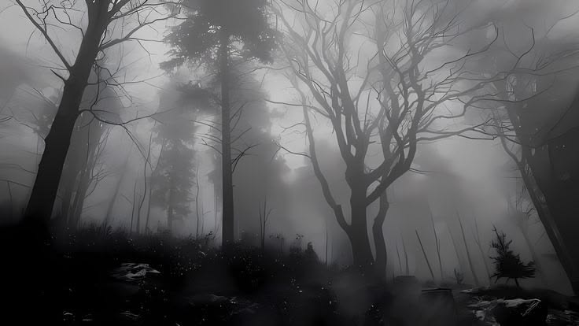
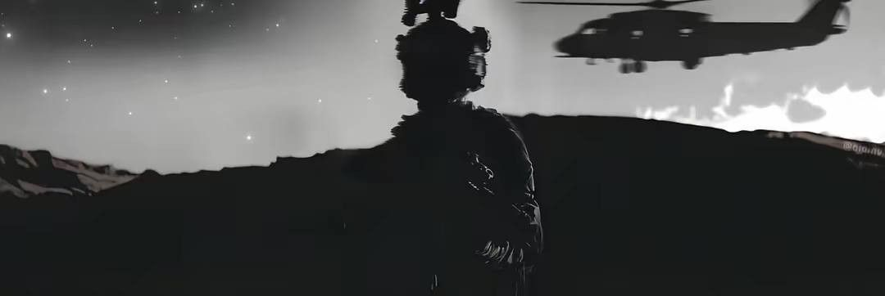

// 00 — СЛУЖЕБНАЯ НЕОБХОДИМОСТЬ · ЗАПАДНАЯ СИБИРЬ · 2025
Спящее
Эхо
Операция Мобильной Оперативной Группы Бета-777 «Копьё Гекаты» по прерыванию тауматургического ритуала неизвестной классификации. Западная Сибирь, █████, Российская Федерация.
// 01. ПРЕДЫСТОРИЯ
Аномалия
в тайге
В декабре 2023 года в Западной Сибири, недалеко от █████, сеть Фонда, которая следит за сверхъестественными погодными явлениями, засекла постоянную аномалию. Она исходила от тауматургического излучения. Это излучение усиливалось толчками, но его характеристики не совпадали ни с одной из известных тауматургических систем.
Специалисты из Зоны-91 не смогли точно определить, что происходит. Отдел тауматургического анализа подтвердил только, что кто-то занимается тауматургией, пытаясь воздействовать на окружающую реальность. Но какой именно ритуал проводился, с какой целью и к какой школе он относится — было неизвестно. В отчёте говорилось о попытке вмешательства в пространство и воздействии на Юм в личных целях.
Поскольку Фонду не удалось установить источник несанкционированного применения тауматургии, а инцидент не соответствовал почерку ни одной из известных Связанных Организаций, было принято решение направить отряд МОГ Бета-777 для немедленной остановки процесса и сдерживания неизвестной угрозы.
С помощью спутниковой тепловизионной съёмки Фонда стало известно, что центр аномалии находился в густом хвойном лесу. На поляне стояла старая каменная православная церковь, построенная в советское время. Само здание не представляло опасности, но в его подвале обнаружили следы сильной тауматургической активности: стены были покрыты странными символами, в которых сочетались руны и жуткие образы.
Отряд Бета-777 «Копьё Гекаты», который постоянно базируется в Зоне-91 и может быстро перемещаться по всему миру, успешно справился с задачей в течение 48 часов. Этот отряд специализируется на тауматургических операциях и борьбе с ритуалами.
// 02. ХОД ОПЕРАЦИИ
Этапы
операции
-
I ЭТАП I
Подготовка и оценка
Передовой отряд Бета-777 развернул на границе целевой зоны временный командный пункт. Прикреплённые к группе тауматургические специалисты из Зоны-91 дистанционно проверили подвал церкви. По результатам сканирования стало ясно, что внутри подвала сосредоточен средний уровень тауматургической энергии, а сам ритуал всё ещё накапливает силу и пока не начал её высвобождать. Проще говоря, культ ещё не успел завершить финальную стадию, но времени у него оставалось совсем немного.
Специалисты смогли определить: ритуал должен был открыть путь между нашим измерением и чужим. Уже зная печальные события, группа сразу перешла к силовому срыву процесса.
-
II ЭТАП II
Проникновение и боестолкновение
Бета-777 атаковала сразу с двух сторон: через главный вход в церковь и через внешний вентиляционный проход в подвал. Внутри находились семь членов культа. У всех было оружие и тауматургические способности. Кроме того, они пользовались простыми, но крепкими щитами и защитными печатями, чтобы скрываться от разведки. Бой продолжался около 11 минут. Благодаря численному преимуществу и заранее подготовленным Зоной-91 контрзаклинаниям Бета-777 быстро сломила оборону противника. Все семеро членов культа были уничтожены, выживших не осталось.
Среди мирных жителей никто не пострадал: в радиусе 12 километров от зоны не было постоянных населённых пунктов. У личного состава Бета-777 тоже обошлось без потерь. Тела оккультистов были сожжены на месте, во избежание воскрешения. Далее группа начала обыскивать место проведения ритуала на наличие оккультных предметов.
-
III ЭТАП III
Контрритуал и анализ на месте
Самая важная находка ждала на северной стене подвала церкви. Там была нарисована огромная и очень сложная мандала, сделанная человеческой кровью и каким-то неизвестным тауматургическим раствором. По внешнему кругу тянулась цепочка рун, символы были похожи на даэвские, но сильно искажённые. Внутри был уже совсем другой рисунок — набор жутких символов, которых раньше нигде не встречали: спирали, знаки закрытых глаз и повторяющиеся мотивы «дверь/разлом».
Именно сочетание этих двух уровней помогло специалистам понять назначение ритуала. Всё указывало на «сдвиг» между измерениями — на насильственное смещение границы между привычной реальностью и каким-то параллельным миром, чтобы появилась трещина и через неё открылся портал. Эту версию подтвердили и записи культа, найденные на месте.
Были обнаружены рукописи культистов, где русский текст использовался вперемешку с древнегреческим. Внутри содержалась подробная информация о проведении ритуала, его свойства и итог воздействия.
// 03. РЕЗУЛЬТАТЫ
Итог
Все 7 членов культа уничтожены, выживших нет.
Ритуал успешно подавлен: сдвиг измерений не завершён, «путь» не сформирован, угрозы из другого измерения не проникли в базовую реальность.
Потерь среди гражданского населения нет, потерь среди Бета-777 нет.
Артефакты и рукописи с места переданы в Зону-91 для углублённого тауматургического анализа. Приоритетные направления — происхождение «символической системы кошмарных образов», природа предполагаемого параллельного измерения и возможные координаты разрыва.

Документ подготовлен по материалам послеоперационного отчёта МОГ Бета-777 «Копьё Гекаты». При обнаружении расхождений или ошибок — обратитесь к куратору операции.